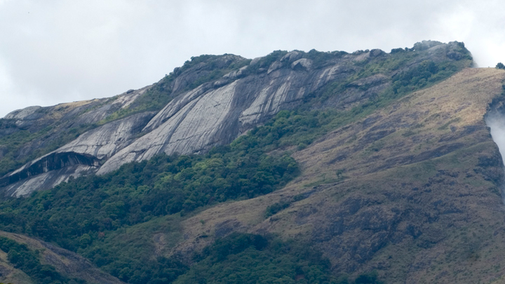

Nelliyampathy Hills

Palakkad also called as Palghat is the gateway to Kerala at the foot of the western ghats.
Palakkad is a land of green paddy fields and graceful tall coconut trees. Along with these Palakkad also holds misty mountains,
evergreen forests, huge dams, wildlife sanctuaries and historical monuments. Palakkad is called the granary of Kerala.
Celebrated as the Granary of Kerala, Palakkad is a vast stretch of fertile plains interspersed with hills, rivers, mountain streams and forests.
The gateway to Kerala from the north, a 40 kilometre break in the mountains known as the Palakkad Gap gives access to this land situated at the foot of the Western Ghats.
The pass acts as a corridor between Kerala and the neighbouring Tamil Nadu and played a key role in the trade relations between the east and west coasts of peninsular India.
Deriving its name from the Malayalam words Pala (Alsteriascholaris) and Kadu (forest), this place was once a stunning expanse of forest covered with the sweet-scented flowers of the Pala tree.
A potpourri of Tamil and Kerala culture, some of the finest Carnatic musicians hail from this district which continues to be a principally agrarian society.
Palakkad is blessed with a wide variety of attractions. You can engage yourself in a variety of entertainment options in these beautiful land.
There are exotic hills like Nelliyampathy, Attappady which are a delight to watch.
he unique Silent Valley National Park, Parambikulam Wildlife Sanctuary and dams like Malampuzha, Mangalam, Pothundi, Kanjirapuzha, Siruvani and Parambikulam are some other destinations in Palakkad.
Not only natural attractions there are many made attractions in Palakkad. Palakkad Fort is one such place.
Situated at the middle of the city the fort welcomes you to this wonderful place. Adjacent to the the fort, there is a children’s park and an open air
stadium called Rappadi. Malampuzha also called as the Vrindavan of Kerala is also situated in Palakkad.
Malampuzha Dam is surrounded by beautiful hilly region. Parambikulam dam and the wildlife sanctuary is a renowned for the sight of all kind of animals and plants.
Parambikulam is also famous for teak plantations and the reservoir.

Picture this – a rock garden of many wonders, where all the artefacts are crafted from scrap. At the Rock Garden of Malampuzha
read more
The eerie silence, emphasised by the missing Cicadas that gave Silent Valley its name, may make you feel and hear things you could never have
read more
The Fort of Tipu Sultan, also known as Palakkad Fort, is in the heart of Palakkad town, Kerala. The fort was built by Hyder Ali, the emperor of Mysore province
read more